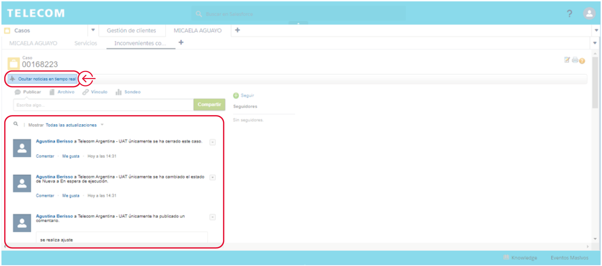
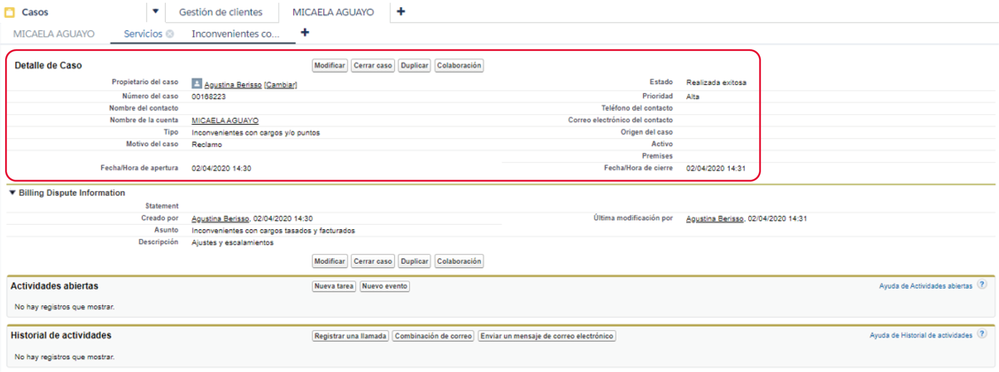
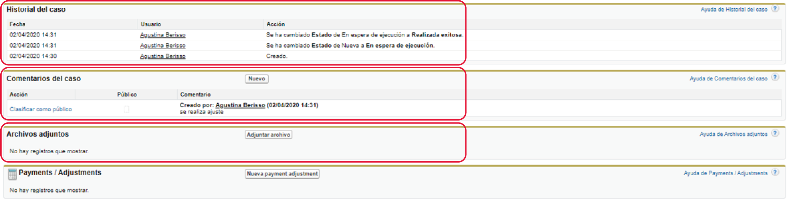

Ingresá al menú desplegable y seleccioná la opción “Casos”.
Estado de una gestión
Cuando cargás una nueva gestión, esta crea por detrás un nuevo Caso o una nueva Orden, dependiendo del tipo de gestión cargada.
Los Casos se crean a partir de gestiones de Posventa mientras que las Órdenes de Venta derivan de gestiones de Venta (es decir, cuando se agregan ítems al Carrito).
También existen otros tipos de Órdenes como Orden de desconexión u Orden de suspensión. Todas se visualizan en el CRM con el nombre “Pedido”.
Existen gestiones que crean una Orden y un Caso en paralelo. Por ejemplo:
Una vez creada la gestión, el Caso es asignado al Inbox o a la Cola correspondiente según las reglas de derivación que apliquen. El propietario del Caso podrá ser un usuario en particular o un Inbox como Back Office Centralizado.
Si ingresamos al detalle de la Orden o del Caso, vamos a poder acceder a información como el estado de la gestión, el creador, el actual propietario (es decir, a quién quedó derivada), el canal en el cuál se cargó, la fecha de apertura y de cierre, el estado de un Delivery, entre otros datos.
Búsqueda de Órdenes y Casos en Salesforce
Existen diferentes maneras de ingresar a una Orden o un Caso:
 Desde las Últimas gestiones del cliente
Desde las Últimas gestiones del cliente
En la columna izquierda de la Vista Inicial del cliente veremos las últimas gestiones realizadas en todos los canales, allí visualizaremos tanto Órdenes como Casos. Para ingresar a alguno hacé click sobre el nombre de la gestión:
 Desde “Gestiones” en la Card del cliente
Desde “Gestiones” en la Card del cliente
Otra opción es ingresar desde la Card de la línea haciendo click en “Gestiones”. Aquí verás tanto gestiones de Venta como de Posventa realizadas sobre la línea.
Podrás filtrar las Órdenes y los Casos por rango de fechas. Para conocer el estado de cada uno verificá la columna “Estado” y para más detalle hacé click sobre el número de gestión.
 Búsqueda por número de Caso o Pedido (Orden) en la barra de búsqueda
Búsqueda por número de Caso o Pedido (Orden) en la barra de búsqueda
 Búsqueda desde el menú “Casos” (esta opción es válida únicamente para buscar Casos)
Búsqueda desde el menú “Casos” (esta opción es válida únicamente para buscar Casos)
Detalle de un Caso
Una vez que se encuentra el Caso (utilizando cualquiera de las opciones mencionadas previamente) hacé click en el mismo para acceder al detalle.
Presionando el botón “Mostrar noticias en tiempo real” podrás visualizar cualquier modificación que se haya hecho (apertura del caso, derivaciones a otros sectores, comentarios, cambios de Estado, cierre del caso, entre otros).
Más abajo encontrarás el Detalle del Caso, donde visualizarás información importante como el número y estado del caso, el propietario, fecha de apertura y de cierre, comentarios, archivos adjuntos, cambios de estado y a qué sector quedó derivado.
En "Historial del Caso" podés ver cada modificación que se hizo sobre el Estado del mismo, junto con la fecha y el usuario que realizó dicha modificación. Más abajo se visualizarán los Comentarios que acompañan al Caso, escritos por el representante que lo cargó o por algún sector que haya tomado la gestión (Back Office, Cobranzas, Mora, etc.)
Por último, si existieran Archivos adjuntos se podrán visualizar y descargar desde ese módulo.
